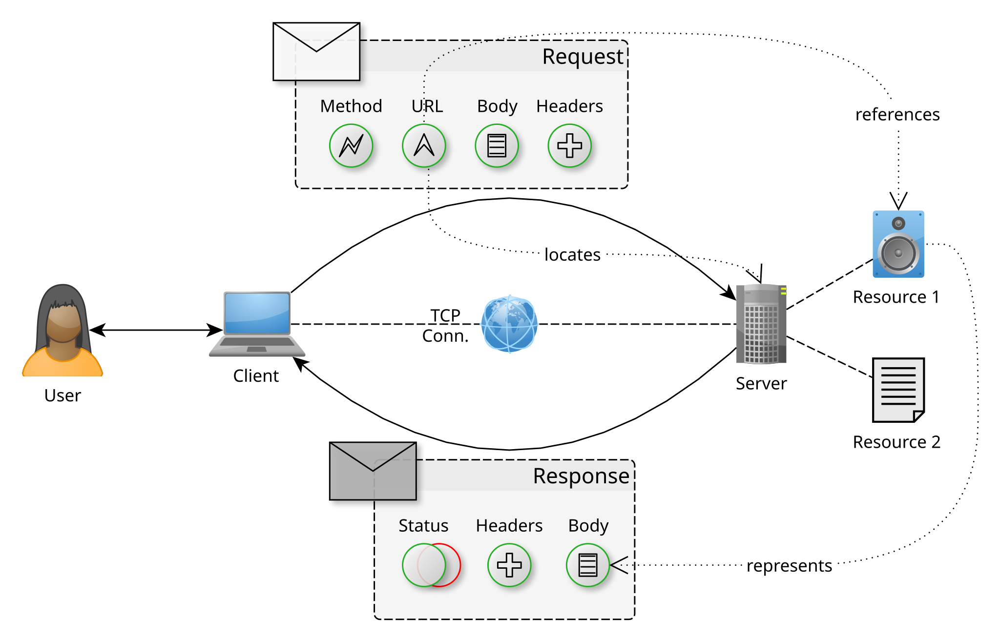
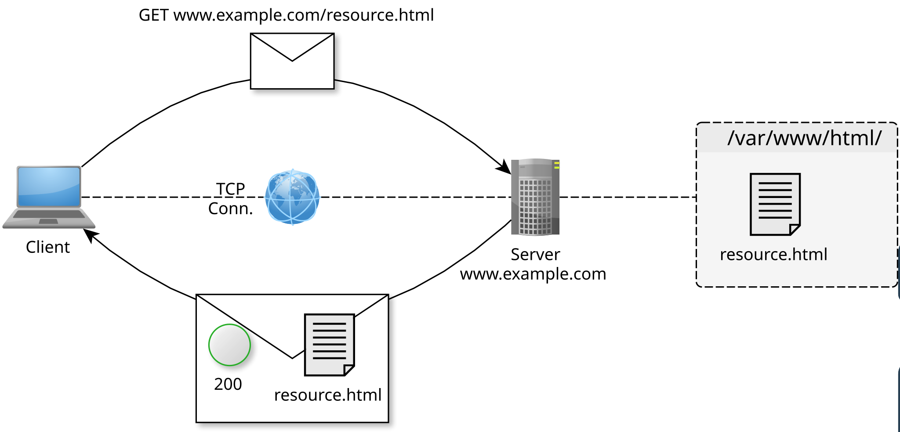
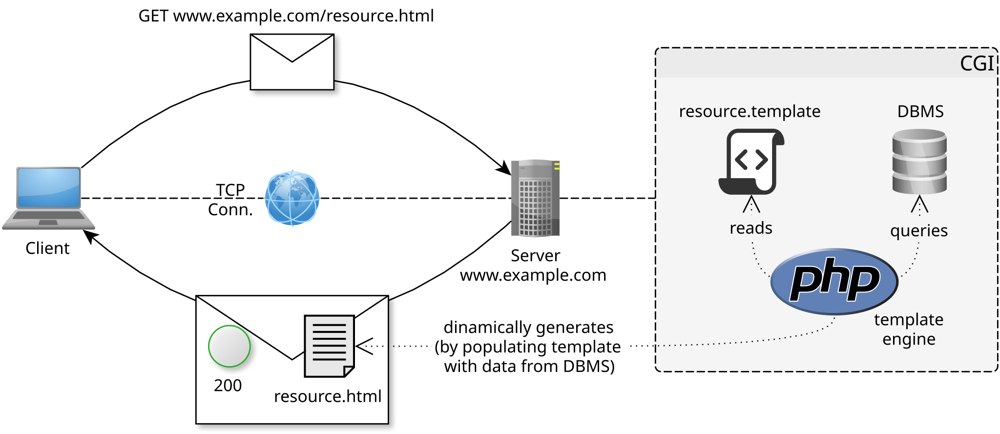
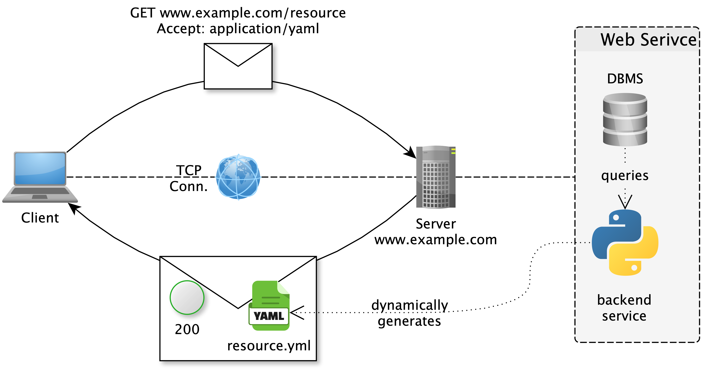
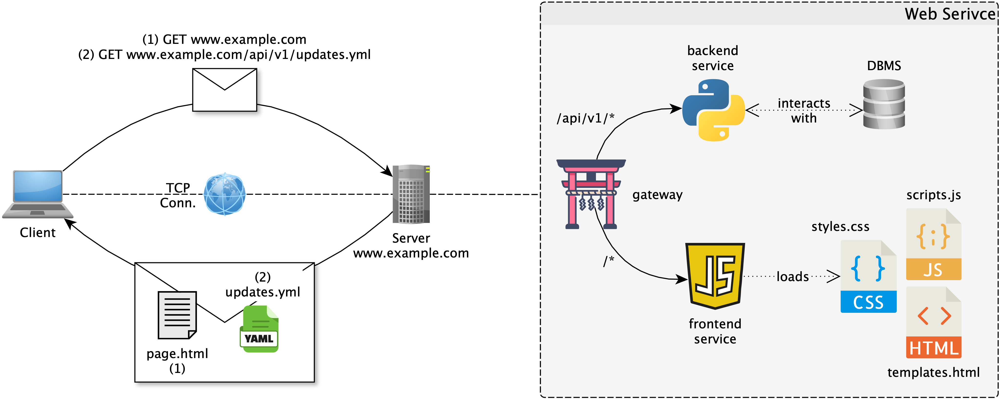

Web Services and RESTful APIs
Software Engineering
(for Intelligent Distributed Systems)
A.Y. 2025/2026
Giovanni Ciatto
Compiled on: 2026-05-08 — printable version
What is the Web?
The Web is, at the same time:
- a distributed hypermedia information system
- a collection of linked resources accessible via the Internet (in particular, via HTTP)
- an infrastructure for distributed systems based on HTTP
In practice, the Web revolves around:
- resources identified by URLs
- interactions mediated by HTTP
- documents and applications built with HTML, CSS, and JavaScript
- hyperlinks connecting information and behaviour
Hyper-links, hyper-text, and hyper-media
- hyper-links are references from one resource to another, enabling navigation and discovery
- hyper-text is text that contains links to other text
- hyper-media generalizes the concept to include links in images, audio, video, forms, etc.
- the Web’s success is largely due to its ability to connect resources through links
- in the user’s perspective, the Web is something to navigate and explore through links…
- … not just a collection of isolated documents
URLs identify resources

- a URL tells the client where a resource is and how to reach it
- different parts of the URL may identify host, port, path, query parameters, or fragment
- in ReSTful systems, URLs should identify resources rather than actions
- e.g. WRONG URL:
https://example.com/getCustomer?id=123 - e.g. RIGHT URL:
https://example.com/customers/123
- e.g. WRONG URL:
HTTP is the Web’s application protocol
Hyper-Text Transfer Protocol (HTTP) standardizes how clients and servers exchange messages:

- clients acting on behalf of users or applications
- servers hosting resources or providing functionalities
- requests from client to server
- responses from server to client
- methods describing the intended operation
- status codes describing the outcome
- headers and bodies carrying metadata and content
Example of simple HTTP interaction (read)
- Client wants to remotely read volume of a speaker (id:
123), hosted by server athttps://example.com - Server allows users to read/change volume of speakers, by speaker ID, through HTTP
- To read the volume, client sends an HTTP request to URL
https://example.com/speakers/123/volume- method:
GET[“I want to read some information about the resource”] - headers:
Accept: text/html[“I want the response to be an HTML page describing the volume”]Authorization: <auth token here>[“I am authorized to access this resource, here is my token”]
- body: (empty)
- method:
- Server processes the request, reads the actual volume value, and produces a Web page describing that speaker’s volume, sending back an HTTP response
- status code:
200 OK[“The request was successful, here is the information you asked for”] - headers:
Content-Type: text/html[“The body of this response is an HTML document”]Cache-Control: no-cache[“Don’t cache this response, it may change frequently”]
- body:
<html><body><h1>Speaker 123</h1><p>Volume: 75%</p></body></html>[“Here is the HTML page describing the speaker’s volume”]
- status code:
Example of simple HTTP interaction (write)
- Client wants to remotely increase volume of a speaker (id:
123), hosted by server athttps://example.com - Server allows users to read/change volume of speakers, by speaker ID, through HTTP
- To increase the volume, client sends an HTTP request to URL
https://example.com/speakers/123/volume- method:
POST[“I want to change some information about the resource”] - headers:
Content-Type: application/json[“The body of this request is a JSON document describing the change I want to make”]Authorization: <auth token here>[“I am authorized to access this resource, here is my token”]
- body:
{"change": "+10%"}[“I want to increase the volume by 10%”]
- method:
- Server processes the request, updates the actual volume value, and sends back an HTTP response
- status code:
204 No Content[“The request was successful, but there is no content to return in the body”] - headers: (none)
- body: (empty)
- status code:
HTTP request messages

- Method: what to do on the resource (e.g., GET, POST, PUT, DELETE)
- URL: what resource to access and where (e.g., https://example.com/speakers/123/volume)
- Headers: metadata about the request (e.g., format of the body, authentication token, requested response format, etc.)
- Body: optional content sent to the server (e.g., requested changes to the resource, etc.)
- [Protocol] Version: necessary to let older and newer client/servers interoperate
HTTP response messages

- Status code: numeric code identifying the success or failure of the request (e.g., 200, 404, 500)
- Reason phrase: human-readable description of the status code (e.g., “OK”, “Not Found”, “Internal Server Error”)
- Headers: metadata about the response (e.g., format of the body, caching directives, etc.)
- Body: optional content sent to the client (e.g., requested information, error message, etc.)
- [Protocol] Version: necessary to let older and newer client/servers interoperate
About HTTP methods
Standard set of admissible operations that clients may request on resources:
-
main ones:
GET,POST,PUT,PATCH,DELETE
-
many more are supported, for example
HEAD,OPTIONS,CONNECT,TRACE, etc.- see https://developer.mozilla.org/docs/Web/HTTP/Methods for a complete list
About HTTP status codes

-
3-digit, positive integer numbers, the most significant digit identifying the class of the response:
1xx: informational responses (e.g., “time to swap to another protocol”)2xx: successful responses (e.g. “successfully processed the request with/without body being returned”)3xx: redirection messages (e.g. “the resource has moved, here is the new URL”)4xx: client-side error responses (e.g. “cannot process the request due to client’s mistake”)5xx: server-side error responses (e.g. “cannot process the request due to server’s mistake”)
-
most common status codes are in the picture:
- see https://developer.mozilla.org/docs/Web/HTTP/Status for a complete list
About HTTP headers
Key–value pairs that carry metadata about the request or response, for example:
Content-Type: specifies the media type of the body content [both in reqs and resps]Authorization: contains credentials for authenticating the client [commonly in reqs]Cache-Control: provides directives for caching mechanisms [commonly in resps]Accept: indicates the media types that the client can process [commonly in reqs]Set-Cookie: instructs the client to store a cookie [commonly in resps]User-Agent: identifies the client software making the request [commonly in reqs]Location: indicates the URL of a newly created resource or a redirection target [commonly in resps]- full list of standard headers: https://developer.mozilla.org/docs/Web/HTTP/Headers
Server designers may “invent” custom headers, but it’s best to stick to standard ones when possible for better interoperability
- custom headers should be prefixed with
X-to avoid conflicts with standard headers- but this convention is being deprecated in favor of using a custom namespace (e.g.,
MyApp-) for non-standard headers.
- but this convention is being deprecated in favor of using a custom namespace (e.g.,
Content format (“type”) negotiation
Clients and servers may automatically negotiate the format of the data being exchanged
- Assumtion:
- the server may represent resources in various formats (e.g., HTML, JSON, XML, etc.)
- the client may prefer certain formats over others (e.g., a browser may prefer HTML, while an API client may prefer JSON)
- Mechanism:
- client sends an
Acceptheader listing the media types it can process, possibly with quality values (e.g.,Accept: text/html, application/json;q=0.9, */*;q=0.8) - server selects the best format it can produce based on the client’s preferences and its own capabilities
- server sends the response with the selected format and a
Content-Typeheader indicating the media type of the body (e.g.,Content-Type: application/json) - client processes the response according to the specified format
- client sends an
- “Formats” are expressed as media types (also known as MIME types), which are standardized identifiers for data formats (e.g.,
text/html,application/json,image/png, etc.)
About MIME types
-
MIME stands for “Multipurpose Internet Mail Extensions”, but it is used far beyond email to identify media types in HTTP and other protocols
-
A MIME type consists of a type and a subtype, separated by a slash (e.g.,
text/html,application/json,image/png) -
Full list is available at https://developer.mozilla.org/docs/Web/HTTP/Guides/MIME_types/Common_types
-
Most common MIME types are in the table below:

Most common Web content types (pt. 1)
-
Hypertext Markup Language (HTML):
text/html(for Web pages) should describe the content of a Web page, with no stylistic or behavioural information-
“the page” usually represents some resource (physical, digital, or virtual) that exists on the server-side, in a human-friendly way
-
it may contain links to other resources (e.g. media, other pages, scripts, etc.)
-
it may contain forms to let users interact with the server (e.g. submit data, trigger actions, etc.)
-
it may contain identifiers (e.g.
idattributes) and classes for page contents (e.g. paragraphs, buttons, etc)- so that CSS and JavaScript can refer to them for styling and behaviour purposes
-
underlying assumption is that the client knows how to render HTML pages…
- … after downloading and interpreting all the resources linked from the page (e.g. CSS, JS, media, etc.)
-
example of HTML page describing a speaker resource:
<html> <body> <h1>Speaker 123</h1> <p>Volume: 75%</p> <button id="increase-btn">Increase Volume</button> </body> </html> -
Most common Web content types (pt. 2)
-
Cascading Style Sheets (CSS):
text/css(for stylesheets) should describe the styling of a Web page, with no content or behaviour information-
it may contain rules about how to depict individual elements or groups of elements of the page (as identified by their tag, id, class, etc.)
-
these rules are interpreted by the client to determine how to render the page (e.g. colors, fonts, layout, etc.)
-
example of CSS stylesheet describing the styling of a speaker page:
/* file styles.css */ body { font-family: Arial, sans-serif; background-color: #f0f0f0; } h1 { color: #333; } p { font-size: 18px; } #increase-btn { background-color: #4CAF50; color: white; padding: 10px 20px; border: none; cursor: pointer; } #increase-btn:hover { background-color: #45a049; } -
Most common Web content types (pt. 3)
-
JavaScript (JS):
application/javascript(for scripts) should describe the behaviour of a Web page, with no content or styling information-
it may contain instructions to manipulate the content and styling of the page (e.g. by adding, removing, or changing elements, classes, attributes, etc.)
-
such instructions may be triggered by events occurring after the page has been shown to the user (e.g. button clicks, form submissions, etc.)
-
such instructions are provided by the server, along with the page, to let the client know how to “animate” the page and make it interactive
-
example of JavaScript code reloading the page when the “Increase Volume” button is clicked:
// file script.js document.getElementById('increase-btn').addEventListener('click', function() { location.reload(); }); -
Most common Web content types (pt. 4)
Wrap-up: most commonly the HTML pages contains references to the CSS and JS files that describe the styling and behaviour of the page, respectively, and the client is responsible for downloading and interpreting all these resources to render the page correctly:
<html>
<head>
<link rel="stylesheet" type="text/css" href="styles.css"> <!-- reference to CSS stylesheet -->
<script src="script.js"></script> <!-- reference to JavaScript file -->
</head>
<body>
<h1>Speaker 123</h1>
<p>Volume: 75%</p>
<button id="increase-btn">Increase Volume</button>
</body>
</html>
Most common Web content types (pt. 4)
-
JavaScript Object Notation (JSON):
application/json(for data exchange) should describe the content of a resource in a machine-friendly way, with no styling or behaviour information-
it may contain structured data representing the state of a resource, or the result of an operation on a resource, etc.
-
[AJAX] sometimes the JS code may contact the server to get some tiny piece of information in JSON format, rather than the entire HTML page, in order to update the page dynamically without reloading it
-
other times, the client is not a browser, but some software component that just needs data in machine-friendly format
-
example of JSON document describing a speaker resource:
{ "id": 123, "name": "Living Room Speaker", "volume": 75, "status": "on" }- example of JavaScript code exploiting AJAX to contact the server and update the page dynamically:
document.getElementById('increase-btn').addEventListener('click', function() { // Send an AJAX request to the server to increase the volume fetch('/speakers/123/volume', { method: 'POST', headers: { 'Content-Type': 'application/json' }, body: JSON.stringify({ change: '+10%' }) }).then(response => { if (response.ok) { // If the request was successful, update the volume displayed on the page let volumeElement = document.querySelector('p'); let currentVolume = parseInt(volumeElement.textContent.split(': ')[1]); volumeElement.textContent = `Volume: ${currentVolume + 10}%`; } else { alert('Failed to increase volume'); } }); }); -
Most common Web content types (pt. 3)
-
other common formats, conceptually equivalent to JSON, include:
- eXtensible Markup Language (XML):
application/xml(for data exchange) a sort of generalization of HTML, with custom tags and no predefined semantics:
<speaker> <id>123</id> <name>Living Room Speaker</name> <volume>75</volume> <status>on</status> </speaker>- YAML Ain’t Markup Language (YAML):
application/x-yaml(for data exchange) a sort of generalization of JSON, with more human-friendly syntax (easier to read and write):
id: 123 name: Living Room Speaker volume: 75 status: on - eXtensible Markup Language (XML):
History of the Web in a nutshell
- Web 1.0: mostly static pages, read-only browsing
- Web 2.0: server-side dynamic pages, forms, template engines, user-generated content
- Web 3.0: rich clients using AJAX to talk to Web services asynchronously
- Web 4.0: single-page applications (SPAs) with highly interactive frontends
Web 1.0: static pages, read-only
- Web Servers are essentially wrappers for folders of static files (HTML, CSS, JS, media, etc.)
- servers have a public IP address and a domain name (e.g.,
example.com) - server have a root folder (e.g.,
/var/www/html) where the static files are stored - clients may access the files by sending HTTP requests to the server, specifying the path to the file in the URL (e.g.,
https://example.com/index.html)- file paths are mapped to URL paths (e.g.,
/var/www/html/index.htmlis accessible athttps://example.com/index.html)
- file paths are mapped to URL paths (e.g.,
- servers have a public IP address and a domain name (e.g.,

Web 2.0: dynamically generated pages + template engines (pt. 1)
- Web Servers are now able to generate dynamic pages upon request, via Common Gateway Interface (CGI), that populates HTML templates with data from databases or other sources
- PHP, JSP, ASP, etc. are examples of server-side scripting languages used for this purpose
- upon receiving an HTTP request for reading a page, the server:
- looks for the corresponding CGI script (e.g.,
index.php) - executes the script via some template engine, which may query a database or perform other operations to gather data
- the script then populates an HTML template with the gathered data and returns the generated HTML page as the HTTP response
- it is now possible for clients to access dynamic content (e.g. user-personalized pages)
- looks for the corresponding CGI script (e.g.,
- upon receiving an HTTP request for writing (e.g., form submission), the server:
- looks for the corresponding CGI script (e.g.,
submit.php) - executes the script, which processes the submitted data (e.g., by storing it in a database) and then generates an appropriate response (commonly: a redirection to the same page or another)
- it is now possible for clients to update the server-side state (e.g. by submitting forms)
- updates commonly imply reloading the entire page (which is slow for the user and inefficient for the server)
- looks for the corresponding CGI script (e.g.,

Web 2.0: dynamically generated pages + template engines (pt. 2)
-
Example of PHP script generating a dynamic page for a speaker resource:
<?php // index.php $speaker_id = $_GET['id']; // get speaker ID from query parameter // query database to get speaker information (this is just a placeholder, actual DB code would be needed) $speaker_info = getSpeakerInfoFromDatabase($speaker_id); ?> <!DOCTYPE html> <html> <head> <title>Speaker <?php echo $speaker_info['name']; ?></title> </head> <body> <h1>Speaker <?php echo $speaker_info['name']; ?></h1> <p>Volume: <?php echo $speaker_info['volume']; ?>%</p> <form action="update_volume.php" method="POST"> <input type="hidden" name="id" value="<?php echo $speaker_id; ?>"> <input type="number" name="change" value="10"> <!-- change in volume --> <button type="submit">Increase Volume</button> </form> </body> </html>- submitting a form to
update_volume.phpwould trigger a server-side script that updates the speaker’s volume in the database and then redirects back toindex.phpto show the updated information
- submitting a form to
-
Software engineering remarks:
- this approach mixes content, styling, and behaviour in a single file, which is a bad practice for maintainability and separation of concerns
- also testability is poor, as it is difficult to test input–output logic separately from its presentation, and there are no clear interfaces for unit testing
- the situation where the client is not a human-driven browser – but some automated software which just needs data in machine-friendly format (e.g., JSON) – is poorly supported by this approach, as it is primarily designed for generating human-friendly HTML pages
Web 3.0: dynamic pages using AJAX to contact Web Services (WS) pt. 1
Intuition 1: WS are a sort of distributed objects with an HTTP interface, letting clients send requests to produce remote operations and get remote data, without caring about the underlying implementation
Intuition 2: WS may be useful not only to allow visiting Web pages, but in general to build distributed systems where clients and servers exchange data via request–response interactions over HTTP
Intuition 3: clients may not necessarily be browsers, but also other software components (e.g., mobile apps, backend services, etc.) that need to exchange data and functionality over the Web
Web 3.0: dynamic pages using AJAX to contact Web Services (WS) pt. 2
- Web Services are software components that expose data and functionality through an HTTP interface, allowing clients to interact with them over the Web
- in a sense, they bring object-oriented programming to the Web, by letting clients interact with remote objects (resources) through a well-defined interface (API)
- they are often designed to be reusable by different clients (e.g., browsers, mobile apps, other backend services, etc.)
- they typically encapsulate some server-side logic and data, and provide programming-language-agnostic API for clients to access them
- when the client is a browser, it can use AJAX to send HTTP requests to the Web Service and update the page dynamically
- but the service supports other kinds of clients as well, not just browsers…
- … so the service commonly supports multiple content formats (e.g., HTML for browsers, JSON for API clients, etc.) and lets clients negotiate the format they prefer

- Software engineering remarks:
- separation of concerns is now improved: servers may generate data in machine-friendly ways, and can be tested separately from HTML views
- engineers may now design the backend server in a reusable way: Web- and mobile-frontends, may now be designed to leverage the same WS
Web 4.0: single-page applications (SPA) pt. 1
-
Single-page applications (SPAs) are Web applications that load a single HTML page and dynamically update it as the user interacts with the app, without reloading the entire page
- they rely heavily on JS to manage the application’s state and to communicate with backend WSs via AJAX
- they provide a more fluid and responsive user experience, as they can update only parts of the page instead of reloading everything at every update
-
On the server-side, the SPA architecture typically involves 3 components:
- a backend server that hosts WSs for data and functionalities (e.g., implemented with Flask, FastAPI, Spring Boot, etc.)
- $\approx$ encapsulating the model of a Model-View-Controller (MVC) architecture
- a frontend server that runs serves HTML, CSS, and JavaScript to the browser (e.g., implemented with React, Angular, Vue, etc.)
- $\approx$ encapsulating the view and controller of a MVC architecture
- notice that in the end, the frontend is an initially static page, which comes with JS code to update itself dynamically by contacting the backend WSs via AJAX
- an API gateway (e.g., Nginx) that makes the backend and frontend servers available to clients, as if they were a single server, by routing requests to the appropriate component based on the URL path or other criteria
- a backend server that hosts WSs for data and functionalities (e.g., implemented with Flask, FastAPI, Spring Boot, etc.)

What are Web Services?
A Web service is, roughly speaking:
- a distributed software component exposed through an HTTP interface
- accessible over the network by heterogeneous clients
- designed to encapsulate data and functionality behind a stable API
Its API typically specifies:
- endpoints and URL patterns
- admissible HTTP methods
- input parameters, headers, and body formats
- output formats and status codes

Why Web Services dominate distributed systems
Web services are the backbone of modern distributed systems because:
- Web mechanisms are simple yet flexible
- HTTP is pervasive and highly optimized
- the Web stack is language- and platform-independent
- HTTP is widely supported and usually firewall-friendly
- ReST encourages interoperability through a uniform interface
They are also useful to wrap legacy software so as to:
- expose existing capabilities on the Web
- let heterogeneous components interoperate

The ReST architectural style
ReST is an architectural style for distributed hypermedia systems.
Its key constraints are:
- client-server
- representational state transfer
- uniform interface
- stateless interactions
- cacheable responses
- layered system
- code on demand
The point is not to use HTTP superficially, but to structure interactions around resources and representations.
ReST constraints in practice
- client-server: clients consume resources, servers host them
- representation-oriented: clients exchange representations, not direct access to server internals
- uniform interface: resources are identified by URLs and manipulated via standard HTTP methods
- stateless: each request contains all the information needed to process it
- cacheable: responses may be reused when allowed
- layered: proxies, gateways, and intermediaries can be inserted transparently
- code on demand: optional transfer of executable code, for example JavaScript

ReSTful APIs in practice
Design the system in terms of:
- collections of resources
- individual resources
- admissible operations on each resource
Typical reasoning pattern:
- collection endpoint: /customers
- item endpoint: /customers/{id}
- operation semantics mapped onto HTTP methods
From API design to implementation
- devise the API, for example with OpenAPI Specification
- identify endpoints and parametric URLs
- identify admissible HTTP operations
- identify input parameters and body formats
- optionally define relevant headers
- define response formats and status codes
Then implement:
- the server side with frameworks such as Flask, FastAPI, or Spring Boot
- the frontend side with frameworks such as React, Angular, or Vue

Check your understanding (pt. 1)
- What does it mean to say that the Web is a distributed hypermedia information system?
- What is the role of a URL in Web communication?
- Which parts make up an HTTP request? And an HTTP response?
- What is the difference between an HTTP method and an HTTP status code?
- What are HTML, CSS, and JavaScript responsible for in a Web application?
- What is the difference between hypertext and hypermedia?
- How did the Web evolve from static pages to single-page applications?
- What is a Web service, and how is its API usually described?
- Why are Web services so effective for distributed systems integration?
- What are the main constraints of the ReST architectural style?
- What does it mean for a ReST interaction to be stateless?
- How would you model a simple domain in terms of collections, resources, and operations?
Lecture is Over
Compiled on: 2026-05-08 — printable version